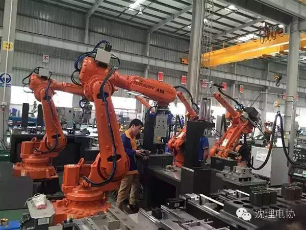
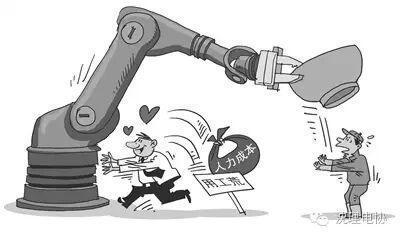

富士康机器人一下让6万人失业，人类怎么办？
以机器换人来降低制造业用工成本已成社会共识。广东、浙江、江苏、深圳、重庆等制造业集中的省市，机器换人行动已强力推进数年。进入“十三五”后，不但上述省市的机器换人力度依然不减，而且还有更多省市加入了进来。
据中国工业自动化控制网昨天发布的最新消息，仅作为国内电子产品代工中心昆山市的富士康苹果代工厂，最近刚完成的新一轮机器换人行动，就一次性换下员工6万人。经前几次机器换人，富士康昆山工厂员工已降至11万人，经过最新一次机器换人，留下来的员工只剩5万人。这还没有排除富士康昆山工厂是否还有下一次机器换人安排。
另据昆山市政府披露，仅去年一年，包括富士康在内，昆山市共有35家台企出资6.1亿美元用于机器换人。而根据今年计划，参加机器换人的台企将增加到600家。这600家台企均块头较大，其年产出占到昆山市GDP的六成以上。如果机器换人行动推进顺利，据昆山市政府调查预估，在未来两三年间，将有上百万目前在昆山就业的外来员工被机器夺走饭碗。 
由于中国经济死守6.5%增长底线的压力极大，调结构、去产能、去库存、去杠杆，又要损失相当数量的就业岗位，导致稳（保）就业已成当下社会的敏感话题之一。因此，尽管机器换人力度和实际进展，均已超出此前所作预估，但各地在介绍或报道机器换人进展时，都未将换人数量作为成绩予以宣扬，只突出参加企业数量、投钱数量、劳动生产力提升百分比和用工成本下降比例。
虽说机器换人令大量外来年轻蓝领员工失去了饭碗，但作为企业行为却又无可厚非。机器换人较集中的地区，地方政府不但全力支持所在企业，尤其是用工量大的大型代工企业实施机器换人，而且还给予一定比例的“购机补贴”。地方政府算账既精明又务实，尽管补贴需要动用财政资金，但换人后的企业能继续留在当地发展，对地方十分划算。
而且，还有更隐性的实惠是：鉴于机器换人地区的政府，无须为被换下来的外来员工承担再就业责任，数万、十数万甚至更多数量的外来员工黯然离开后，地方政府治安、教育、医疗、住房等公共配套投入，亦得到大幅减轻。
不可否认的是，人工智能科技的发展，已在相当程度上把人类从繁重的重复初级劳动中解放了出来。然而，与人类“抢”饭碗的机器人，并没有就此停步，保安、客服、收银、家政、陪聊、陪护、演奏、清扫、餐饮服务等人工岗位，亦已开始被机器人批量取代。更有甚者，连公证、遗嘱、离婚、商标注册等初级法务等，机器人也已批量取代人工。
不仅如是，就连普遍被认为很难被机器人替代的会计、记者等岗位，机器人也毫不客气地“挤”了进来，而且记账、写稿反倒更精准、更快捷。于是，在市场上和社会中，皆已有舆论开始担忧，机器人会不会夺走人类的大部分饭碗？
其实，需要担忧的甚至已成火烧眉毛般急切的，并不是担忧未来而是直面现实已刻不容缓。在国内制造业各产品门类普遍面临产能过剩、产品压库的窘状下，以富士康为例，其昆山工厂被机器人淘汰的6万员工，绝大多数皆不可能在长三角地区被其他工厂重新接纳。
他们的低学历和低技能，决定了他们只能返回老家去，然而，他们的老家，却没有那么多的劳动密集型工厂可以吸纳他们。也许有人会说，服务业比重连年提升，就业吸纳能力水涨船高。笔者想说的是，在电商和“互联网 ”的强势冲击下，传统服务业同样在萎缩，各类带电触网的现代服务业则嫌他们层次过低。何况当制造业整体步入萎缩周期后，服务业也缺乏稳定增长的用人需求。
简而言之，“十三五”期间，被机器人换下来的中低技能的产业工人和其他各业员工，很可能逐年呈几何级数般增多。现状是，如何妥善安置成千上万的他们，各地政府目前皆没有分出相应的工作精力予以通盘应对。如果这种现状持续至“十三五”，它将演变为又一个带全局性的突出社会难题。

富士康机器人一下让6万人失业，人类怎么办？
做造机器人的人！
编辑/高星华